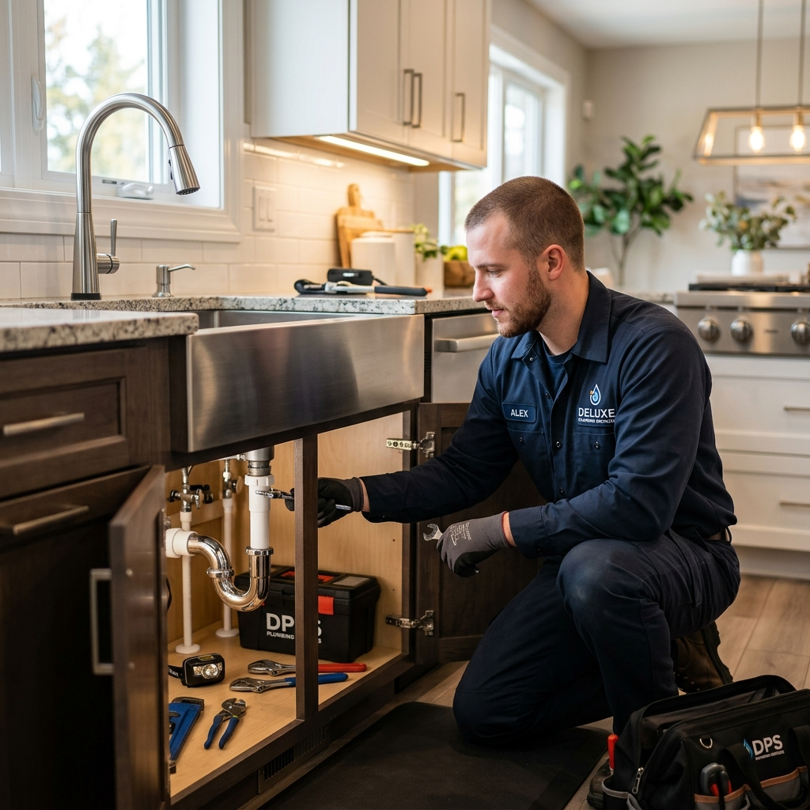

For reliable, licensed plumbing services across Arlington, TX 76005, Home Plumbing USA is the team to call. From frozen pipe emergencies and water heater replacements to routine drain clearing, we do it all. We dispatch our technicians directly to your door, ensuring rapid service and quality repairs.

No Hidden Fees
Fast Dispatch
Strict adherence to all plumbing safety codes
Premium materials and expert craftsmanship
Clear quotes before any work begins
We come to you — no storefront wait
Round-the-clock emergency plumbing service
To ensure the highest quality, our plumbers in Arlington follow a streamlined work process. From inspection to final walkthrough, we maintain strict safety standards and clean work areas.
Contact us to discuss your plumbing needs. We listen carefully to understand your issue and provide expert guidance.
Our licensed plumber arrives to conduct a thorough evaluation of pipes, fixtures, and systems to determine the root cause.
Before any work begins, you receive a clear, detailed estimate with no hidden fees.
Our plumbers execute the work with precision, following all building codes and safety standards.
Every job undergoes a thorough quality check — testing repairs, water flow, and checking for leaks.
We walk you through the completed work and ensure your complete satisfaction before the job is closed.
From small residential repairs to commercial plumbing installations in Arlington, we handle it all. Expect fast help for winter frozen-pipe emergencies and professional fixture installs, drain clogs, and repairs anytime.
Round-the-clock emergency repair for burst pipes, major leaks, and sewer backups in Arlington.
Learn MoreFast, same-day repairs for dripping faucets, running toilets, and minor leaks.
Learn MoreExpert diagnosis and repair for tank, tankless, electric, and gas water heaters.
Learn MoreProfessional installation with proper sizing, code compliance, and warranty support.
Learn MoreUpgrade to energy-efficient tankless water heaters with expert installation.
Learn MoreThorough drain cleaning to remove buildup, grease, and debris throughout your home.
Learn MoreStubborn clogs cleared fast in sinks, tubs, showers, and main sewer lines.
Learn MoreHigh-pressure water jetting for the toughest clogs and pipe interiors.
Learn MoreTraditional and trenchless repair for cracks, bellied pipes, and root intrusion.
Learn MoreEmergency response to stop flooding and water damage — a common Alaska-winter need in Arlington.
Learn MoreFrom fixing running toilets to installing new high-efficiency models.
Learn MoreSink installation, dishwasher hookup, ice maker lines, and drain repair.
Learn MoreFull-service plumbing for toilets, showers, tubs, sinks, and supply lines.
Learn MoreNew water line installation for additions, remodels, and replacements.
Learn MorePreventive plans to catch small issues before they become costly repairs.
Learn MoreFull-service plumbing for offices, retail, and industrial facilities.
Learn MoreThere's no storefront to visit — our mobile plumbing team brings top-quality tools and parts directly to your home or business in 76005.
Dispatched directly to Arlington, 76005 and nearby ZIPs — no fixed storefront delays.
Our technicians are licensed and insured to work throughout Alaska.
We specialize in frozen and burst pipe response, a core need for Arlington homes during hard winter freezes.
Plumbing emergencies don't wait. We prioritize urgent calls throughout Arlington and the surrounding area.
No surprise bills — clear estimates before any work begins in Arlington.
Clear communication, respect for your property, and complete satisfaction on every Arlington call.
Don't just take our word for it. Hear from homeowners and businesses who trust Home Plumbing USA for their plumbing needs.
"Excellent water heater service! They installed a brand new tankless water heater at our home in Haltom City. They were very tidy, wore boot covers, and left the work area spotless. Will definitely use them again for any water heater needs."
"Home Plumbing USA did a great job! Had a major sink backup in Fort Worth (76104) and they got it cleared. The technician was friendly, polite, and kept working until the drain flowed perfectly. Great service from start to finish. Thank you!"
"Home Plumbing USA was fantastic! Had them replace our old kitchen faucet and garbage disposal in Fort Worth (76105). The plumber was polite, worked quickly, and double-checked all connections for leaks. Will definitely call them for our next bathroom upgrade."
Along with Arlington, 76005, our service area covers these nearby communities.
Here are the answers to questions we frequently get from clients in Arlington.
Yes, Home Plumbing USA provides 24/7 emergency plumbing response in Arlington, 76005, including urgent leak repairs and rooter services.
Response times vary by current dispatch location and traffic conditions, but we prioritize emergency calls in Arlington and the surrounding area.
We provide upfront pricing before any work begins, so you will know the cost for your Arlington service call before we start.
Yes, our technicians are fully licensed and insured to provide professional plumbing services throughout Texas, including Arlington.
Expect upfront pricing, licensed plumbing technicians, and rapid response across Arlington.